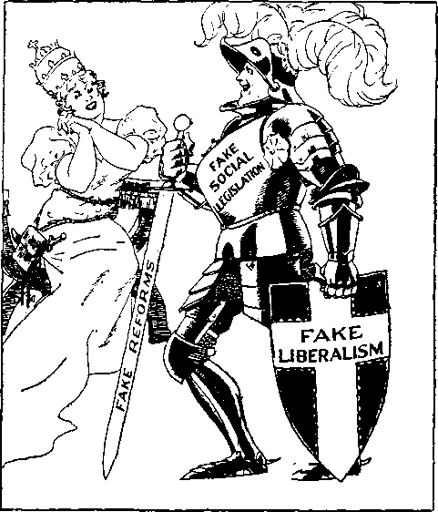
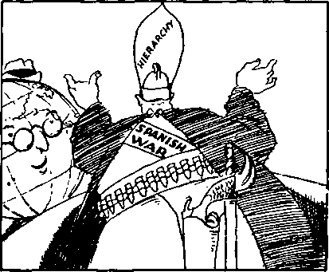
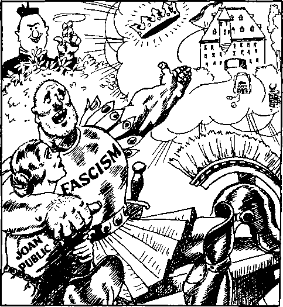
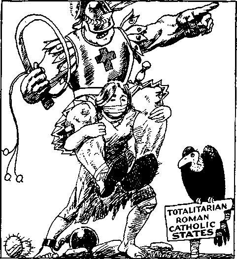

The German and Italian peoples have already been violated, and their voice silenced, their liberty, their self-respect, their very lives, crushed by the pope’s newest crusaders, the Fascists and Nazis.

iiHiimiimiiiiiiimiiiiiiiiiiiiiimiiiiiiiiiimiiiiiimiimiimimiii
in this issue
SHALL THE SUPREME COURT BE JUNKED ?
tlllllllllllllllllllllllllllllllllllllllllllllllllllllllllllllllllllllllllllllll
every other WEDNESDAY
five cents a copy one dollar a year Canada & Foreign 1.25
Vol. XVIII-No. 457
March 24, 1937
*cXq)<
• ’ '■ ■- — .11 ■ ■ —.11—1 •
Congress and the Hierarchy 387
(Shall The Supreme Court
Be Junked?)
Where the People Look for Justice 380
Hierarchy Claims the Credit 391
Who Wants a
Judge Rutherford Explains the Bible
Hint at Guillotining the Court
“Original Sin” and Vindication
The Soul That Sinneth Shall Die
Must Continue in Righteousness
Cartoons and Illustrations
Sixty-seven old men against nine
Statue of Liberty—latest design
The waiter who didn’t get any tip
Gadgets to inspire love for Hierarchy
The Crusaders—Yesterday and Today
Judge Rutherford’s letter to President
-----------------------------------------------------------•SHjh
Published every other Wednesday by
GOLDEN AGE PUBLISHING COMPANY, INC.
117 Adams Street, Brooklyn, N. Y„ U. S. A.
Clayton J. Woodworth President Nathan H. Knorr Vice President
Charles E. Wagner Secretary and Treasurer
FIVE CENTS A COPY $1 a year, United States; ?1.25 to Canada and all other countries.
Notice to Subschibers
Remittances : For your own safety, remit by postal or express money order. When coin or currency is lost in the ordinary mails, there is no redress. Remittances from countries other than those named below- may be made to the Brooklyn office, but only by international postal money order.
Receipt of a new or renewal subscription will be acknowledged only when requested. Notice op expiration is sent with the journal one month before subscription expires. Please renew promptly to avoid loss of copies.
Send change of address direct to us rather than to the post office. Your request should reach us at least two weeks before the date of issue with which it is to take effect. Send your old as well as the new address. Copies will not be forwarded by the post office to your new address unless extra postage is provided by you.
Published also in Bohemian, Danish, Dutch, Finnish, French, German, Greek, Japanese, Norwegian, Polish, Spanish, Swedish.
Offices for Other Countries
British 34 Craven Terrace, London. W. 2. England
Canadian 40 Irwin Avenue, Toronto 5. Ontario, Canada
Australasian 7 Beresford Road, Strathfield, N. S. W., Australia
South African Boston House, Cape Town, South Africa
Entered as second-class matter at Brooklyn, N. Y., under the Act of March 3, 1879.
---
Volume XVIII Brooklyn, N.Y., Wednesday, March 24, 1937 Number 457
Congress and the Hierarchy
(Shall The Supreme Court Be Junked?)
THE Supreme Court of Austria is Kurt von Schuschnigg; of Germany, Adolf Hitler; of Hungary, Nicholas Horthy; of Italy, Benito Mussolini; of Poland, Edward Smigly-Rydz; of Portugal, Antonio Salazar; of Vatican City, Achille Batti.
All of these men believe that when the Roman Hierarchy speaks it speaks with the voice of God; that its will is therefore supreme.
Sixty-seven old men against nine
Other men would like to be the Supreme Court, each of the country where he rules, or seeks to rule as dictator: Oswald Mosley in Great Britain, Leon Degrelle in Belgium, Francois de la Rocque in France, Francisco Franco in Spain, Franklin Delano Roosevelt in the United States of America. All of these men are either Roman Catholics or are of Roman Catholic leanings. Three of Mr. Roosevelt’s sons have had private interviews with the pope within the past year or so.
The present question before Congress is as to whether the sixty-seven old men of the Roman Catholic Hierarchy (the majority of them Italians) will be the Supreme Court of the United States, or will America continue to have its own court, independent of both Mr. Roosevelt and Mr. Ratti.
Wishing to be the Supreme Court of the United States himself, or to have it completely subservient to his will, Franklin Delano Roosevelt has permitted the influence of his high office to be used against the citadel of American liberty.
Taking their cue from Mr. Roosevelt, newspaper and magazine writers have vied with one another in ridiculing “The Nine Old Men”; the chief justice as “The Man on the Flying Trapeze” ; the “Supreme Court as Stumbling Block of Progress”; whose “Judges Read ConstitutioninLightof Their Own Prejudices”. Some of the headlines are “Sentiment Ties Them to the Past”, “Their Divine Right to End,” “The Power of the Five Oldest Men to Shackle the Will of Congress,” “High Court Self-Conscious
Under Scrutiny,” “Pen Pictures of Justices,” “From War, Pestilence and Supreme Court Decisions, 0 Lord, Deliver Us,” “British Courts Long Ago Shorn,” “Hoover’s Mistake Elevated Hughes to Supreme Court Post,” “Amendment Is Unnecessary, ‘General’ Johnson Declares,” “Dred Scott Decision Cited,” “Anti-Congress Ruling on Slavery Led to Civil War, He Recalls; Roosevelt’s Suggested Peaceful Plan for Court
Reform Held Preferable Method,” “Nine Old Men in Black Robes,” etc., etc.
These headlines have fed the American public with articles bearing such statements as follow:
The Court has been too busy running errands for our big corporate interests to pay much attention to fundamental human rights or civil liberties.—New York Post.
The serious observer today cannot doubt that the Supreme Court majority is standing in the path of social progress.—The Nation.
All ruffled up by President Roosevelt’s proposal to clip its wings, the Supreme Court has barred reporters from the section of its building used by the justices.—People’s Press.
This disparagement of the Supreme Court of the United States is alleged in the public press itself not only to have been encouraged by the president, but he is reputed to have made special preparation for similar disparagement to be broadcast by radio.
Statue of Liberty—latest design
The following is from the New York Times:
As a sign of the President’s stand against any compromise, especially on the proposal that would permit him to name six Justices of the Supreme Court to replace or supplement those past 70 years of age, the administration forces prepared to press the radio barrage through which they hope to line up popular sentiment in favor of the plan.
Senator Minton’s address was considered so important a part of the administration’s campaign for the judiciary proposals that President Roosevelt set back the time for his speech at the James A. Farley testimonial dinner to clear the air for it.
Mr. Roosevelt would have done well, before stooping to such a means of dishonoring an integral part of the United States Government, and its highest judicial arm, to remember the words of Senator Schall, deceased, who, speaking of Mr. Roosevelt’s own administration and its facility for propaganda, said:
Never before in the history of this nation has our government stooped to such lying and deceit as we have witnessed in Washington during the past two years. Fully 99 percent of all the statements issued by these Government press agencies are falsehoods.
. . . Every day a dozen or more of these untrue statements are handed to the press and radio, printed and broadcast as truth.
The Supreme Court of the United States is entitled to the respect of the president, who, at the most, occupies office eight years, while the members of the Supreme Court hold office for life. Unlike the 67 old men at Vatican City, they did not select themselves nor pay initially $1,000,000 each for their office; they were selected by some president for their ability and trustworthiness, and confirmed by the United States Senate for the same reason.
Not only did Mr. Roosevelt personally make way for Senator Minton, as above stated, but his attorney general, Homer S. Cummings, also attacked the Supreme Court by radio, and Senator Carter Glass, of Virginia, characterized that as “the most evasive, disingenuous and misleading statement” he had ever read on any grave public program.
Adolf Hitler, by the mandate of 98.8 percent of the German people [compelled by bludgeon methods to vote Hitler’s way], is the Supreme Court of Germany. They had to vote for him or lose their jobs and get beaten up. Benito Mussolini, by the mandate of 10,000,000 voters, with only 15,000 daring to oppose, is the Supreme Court of Italy. No doubt Mr. Roosevelt is of the opinion that by the mandate of $4,800,000,000 of the people’s money to be spent for wages of WPA workers and relief, as an inducement for them to vote, he is entitled to be the Supreme Court of the United States. He errs.
Judges sometimes make mistakes; so do congresses ; so do presidents. There are people still living who can remember when William Randolph Hearst, without adequate reason, plunged the United States into war with Spain, because, so many people have always believed, the Congress of that time had not the intestinal fortitude to face the fact that the Maine was blown up from the inside. Hearst’s money also is used to help pay Mussolini’s expenses.
There was no more reason for the United States to declare war against Spain than for it to declare war against Japan because a bunch of destroyers were ineptly piled up on some rocks in the Pacific off California.
The last bulwark of liberty
Others can remember when, in 1917, Woodrow Wilson forgot his promise to keep America out of the World War. However, he could and did remember the promise made to the French minister of foreign affairs, Gabriel Hanotaux, by Sharp and Bacon, those efficient representatives of the J. P. Morgan Company, that they would guarantee to put the United States into the war on the side of the Allies if France would only continue to fight. Congress was lame there also.
It is not so very long since a considerable number of Congressmen were afraid of every utterance of Michigan’s imported whirling dervish, and Coughlin is alleged to have actually influenced or altered legislation. Congressmen are supposed to keep their heads, not to be led around by the nose.
This is what the Washington Herald thinks of recreants.to duty, not among Supreme Court judges, but in Congress itself.
The dictatorship in Washington has already made striking progress toward the practical abolishment of Congress. It draws the laws which it desires Congress to pass, sends them in for rubber stamp approval and the formalism of enactment, orders the servile Administration majority to disregard doubts as to the constitutionality of its rescripts—and jams them through, regardless of the duties or functions of representatives elected by the people. When the history of these insane years is written, the historian will duly note how men like Speaker Byrns in the House, and Senators, utterly recreant to their trust, like Harrison, Robinson and sundry others, have led the Gadarene swine down the slope of constitutional surrender into the abyss. These men might have made themselves illustrious by defending the prerogatives of Congress—the high council of the nation— against Executive invasion, but they have chosen the ignoble role of selfinterested capitulation rather than a firm stand for the right. Verily they will have their reward, should the liberties of America prove lost beyond recovery. The smile and patronage of the Executive, now so courted and rejoiced in, will have turned to ashes. There will be bitterness and remorse instead—because these unfaithful guardians of the people’s rights are destined to reap contempt and scorn—the contempt of an America again awake.
The Supreme Court has stood for one hundred and fifty years as the strong bulwark of American liberty, and the American people have more confidence in it than they could have in either a president or a congress, because its decisions are guided entirely by law, the people’s own law, their own constitution, provided for the purpose.
In the hue and cry many seem to forget that the Supreme Court does not make law: it merely decides in accordance with the law; a vast difference. Necessity is the argument of tyrants and of slaves, not of freemen. If the people are convinced that the Constitution needs changing, they have the machinery for changing it, and know how to use it, too. It did not take them long to get rid of Prohibition when they set about it.
Why be in such a rush to remove the last thing that stands between Franklin Delano Roosevelt and a full-fledged dictatorship in which his will, like Hitler’s or Mussolini’s, would be the sole law of the land? Mr. Roosevelt himself stated this matter very well in 1930, when he was governor of New York State:
nation. I see one-third of a ill-nourished.
Window dressing. “Oh, Frankie, it’s the same suit Adolf and Benito wore when they started out—and you ’re so becoming in it. Now where’s them nine old men?’’
Were it possible to find “master minds” so unselfish, so willing to decide unhesitatingly against their own personal interests or private prejudices, men almost godlike in their ability to hold the scales of justice with an even hand, such a government might be to the interests of the country; but there are none such on our political horizon, and we-cannot expect a complete reversal of all the teachings of history.
No honest man can deny that Mr. Roosevelt is in a trying position. He himself painted the picture very well in his inaugural address when he said:
In this nation I see tens of millions of its citizens— a substantial part of its whole population—who at this very moment are denied the greater part of what the very lowest standards of today call the necessities of life. I see millions of families trying to live on incomes so meager that the pall of family disaster hangs over them day by day. I see millions whose daily lives in city and on farm continue under conditions labeled indecent by a so-called “polite society” half a century ago. I see millions denied education, recreation and the opportunity to better their lot and the lot of their children. I see millions lacking the means to buy the products of farm and factory and by their poverty denying work and productiveness to many other milnation ill-housed, ill-clad,
Naturally, he would like to correct this condition, and to have the reputation of having corrected it, but there are men equally honest and equally capable who believe he will fail in his efforts and plunge the country into a very much worse condition, in which all personal liberty will be at an end.
One would think Mr. Roosevelt would pause before he proceeds any further with the destruction of an instrument of liberty, the United States Constitution, described by so able a statesman as William E. Gladstone as a document that is "the most remarkable ever struck off at a given time by the brain and purpose of man”.
Does not Mr. Roosevelt know what every lawyer knows, that the time of the Supreme Court is largely taken up with questions appertaining to the invasions of the rights of the people by those who think they are divinely appointed to invade them? The humblest Negro can count on the Supreme Court to protect him from ordered and disordered legislative, executive or judicial violence anywhere, as was recently demonstrated in the Scottsboro (Ala.) cases.
It is the confident expectation of all libertyloving and truth-loving Americans that when Tom Mooney’s ease finally gets to the United States Supreme Court he will be granted the justice which has been so persistently, willfully, crookedly and maliciously denied to him in California. If Mr. Roosevelt, or some succeeding dictator, usurps the functions of that court, Mooney and all other Americans can as well forget the government of their fathers; it will have ceased to exist.
Just here it seems apropos to quote the historian Macaulay’s prophecy of America’s end, and one wonders if he could have foreseen Mr. Roosevelt’s internal attack upon a co-ordinate branch of the government when he said:
Your republic will be pillaged and ravaged in the twentieth century just as the Roman Empire was by the barbarians of the fifth century, with this difference: that the devastators of the Roman Empire came from abroad, while your barbarians will be the people of your own country and the product of your own institutions.
Take a look at the record
The Constitution is unfortunate in that, in its present form, it does not specify the number of judges for the Supreme Court, but the one man, now Chief Justice Hughes, who had had experience on that bench, and was at the time of writing his book The Supreme Court of the United States not then on the bench, made it clear that he believed nine justices were enough.
Mr. Roosevelt seized upon the vulnerable point to overthrow the United States Government. He would shamelessly pack the court so that he may direct its decisions. If he succeeds, America will again become rich by practicing birth control among sows, throwing away millions of sucking pigs, jailing people who raise or sell unstamped potatoes, or who grow too much cotton or do any of a million other things they wish to do. Tailors will be jailed for charging 5c too little for pressing a vest, etc.
The Roman Catholic Hierarchy claims the credit for this “New Deal” program of ‘enriching the nation’, and perhaps they are entitled to it. In A.D. 301 Emperor Diocletian fixed a uniform price for each commodity and for every form of labor or professional service throughout the Roman empire, with the death penalty for violation. It is claimed that the business depression which followed lasted for 1200 years; but that is doubtful.
It has been widely published that at Washington there is a general feeling that the president’s plan lacks candor, that it aims to pack the court with Administration men, that it means dictatorship, that it usurps the balance of power of the two other branches of the government, that it aims at a Supreme Court which will amend the
Constitution by judicial interpretation instead of in the law’ful manner, that it is attempting to force retirement of justices at a time when their reasoning powers are at their best, and that the plan was not advanced during the campaign.
Before he was re-elected Mr. Roosevelt was on record as saying of his previously rejected methods of usurping the power of the States, “If this doesn’t work, we will try something else.” The day after the NRA was found unconstitutional the president made it clear to Paul Block, publisher, that he intended to pack the court, to make them decide as he wishes.
It would have been the noble thing, the upright thing, for Mr. Roosevelt, when he was campaigning for re-election, to make it perfectly clear to the voters that he intended to pack the Supreme Court. Had he done so, it is quite possible that some of the $4,800,000,000 might even have risked their WPA jobs and voted differently than they did.
Mr. Roosevelt has plenty of sympathizers with his present plans of using force instead of reason. Thus the chief of police of West Point, Ga., bought machine guns and turned them over to local textile manufacturers. He may have had personal scruples against spilling blood himself, but was perfectly willing to co-operate with those who did not have such scruples.
If the people of the United States are not willing to trust the judgment of nine experienced justices, will they be more ready to accept the judgment of one executive who has usurped their functions? Who will be the American umpire if every time the umpire makes a decision the executive does not like, the executive decides to have a new umpire?
The waiter who didn’t get any tip at all on a big deal— and he’s still waiting
Who Wants a
Subservient Judiciary?
When legislation has been enacted and its enforcement follows it is only reasonable that those who think their rights have been infringed should have courts of refuge and a supreme court to decide if the fundamental law of the land is involved. The Supreme Court does not pass upon every case that it is asked to consider, nor is it necessary that it should, but it does stand, always, as the court of last resort for the common man, the man whose ancestors built the United States out of a wilderness.
If the people want to correct the Constitution, let them go about it in a lawful way, but surely not by destroying their own fundamental law and placing themselves in the tender care of any dictator, no matter how pleasant his personality may be. Usurpers always smile—at first. The New York Sun goes directly to the point when it says of Mr. Roosevelt:
If he has the power over Congress to pass the bill [packing the court with six more men], and if he then appoints six young and ardent New Dealers to the court, there can be no power in the land to prevent him from doing exactly what he wishes with national affairs.
A writer in the Baltimore Sun, referring to the shameless way in which this proposed packing of the Supreme Court was announced, said:
The president’s message amounts to no less than a proposal disguised by a covering of words as thin as gossamer—to change the membership of the Supreme Court from an impartial body of men to minions of his own choosing who will be expected to perform their duties in a manner pleasing to Franklin D. Roosevelt. The depths of mental and moral dishonesty have been touched.
The president’s well-known intimacy with Oswald Mosley indicates his tendency toward Fascism (Catholic Action). And there is the same disingenuousness that is characteristic elsewhere of this modern-day attempt to substitute force and propaganda for the will of the people—democracy.
Would any American come out in the open and admit that he wants a judiciary patterned after Adolf Hitler’s, which must decide as he wishes? Or after Stalin’s, where the prisoners sign their death warrants before they come into court at all? It is freely admitted at Washington that nothing has ever disturbed the thinkers down there as much as the proposals to subordinate the Supreme Court to the president. The statement, sometimes made, that Mr. Roosevelt is too nice a man to want to do such a thing, is foolish. He is actually doing it.
The Brooklyn Daily Eagle says that Mr. Roosevelt’s proposals are “shocking almost beyond words”. Senator George, of Georgia, says, “A subservient judiciary is worse than no judiciary at all.”
The president’s argument that the number of Supreme Court justices has been changed at various times in the past is no argument now, for no proof exists or is possible that the Supreme Court is not clearing its calendar every year. Why all the rush? If it is desired to permanently change the number of men on the bench, why not go about it by constitutional amendment, so that all the people may have a say on the subject?
It is an easy thing for a gang of wreckers to pull down a building that was raised by the combined skill and effort of conscientious and able workmen.
The amendment to the Constitution proposed by Senator Borah is a good one, section three of which reads:
Sister Jezebel says she’s afraid lie’ll prove a stubborn convert
“No State shall make or enforce any law respecting an establishment of religion or prohibiting the free exercise thereof; or abridging the freedom of speech or of the press; or the right of the people peaceably to assemble and to petition the State or the government for a redress of grievances.”
While the amendment would give the States the right to handle their own social and economic problems, it would prohibit them from interfering with fundamental rights of individuals, Godgiven and constitutionally acknowledged.
Mr. Roosevelt’s policies, unannounced before his first election, placed on the statute books 10,000 pages of pronouncements intended to have the force of law. Their impartial and thorough enforcement would have turned the United States into one vast prison, like Germany. No policy has been pursued that shows any respect for the Constitution which Mr. Roosevelt has twice sworn to support, and for which he has as much respect as for the horse and buggy of his ancestors. His policies would change the U. S. government from its proper position of servant of the people to that of master of the people. The citizen, instead of being a free man, would be a subject.
Ex-Senator James A. Reed, of Missouri, a man of experience and ability, said of the presidential march toward Fascism (Catholic Action):
I unhesitatingly say that our march away from Constitutional government and toward the swamps and morasses of Communism, Bolshevism and Fascism, from liberty to tyranny, has been more rapid than similar revolutions in Russia, in Germany and in Italy. Between that crimson flood and the liberties of the American people, standing on guard as did Hora-tius, Lartius and Her-minius at the bridge, are the nine venerable justices of the Supreme Court of the United States. How long will nature spare them? and if it does happily so keep them with us, how long will it be until the present Administration if continued in power will pack the Supreme Court with additional judges, all of them New Dealers? That, I assert, is in contemplation; that, I assert, has been threatened.
It has not hitherto appeared that the judges of the Supreme Court have been deterred in performing their duties by reason of influence exercised by either religionists or politicians. An American can say that, and hold up his head when he says it. And the very keystone of American liberty lies in the fact that it is just such a judiciary. A really great president would not abuse the highest court of the land by insinuating or declaring that its judgment is inferior to his own, nor use the insulting language that they are ‘'clinging tenaciously to the appearance of adequacy”.
Do not the American people still need one unimpeached and unimpeachable court, when representatives of a great coal and iron company can beat a college professor into insensibility, rob him of his money and watch and threaten to kill him if he does not “quit meddling with our business”?
Do they not need something besides a president when that official will give a cousin, a Catholic clergyman, an order on the chief code expert of the Government to supply information which even the president himself cannot legally possess?
Frank E. Gannett, publisher, says, pungently and truthfully:
The president is mistaken, if he thinks he can conceal his real purpose of packing, influencing and controlling the Supreme Court by confusing that objective with a long dissertation on the slow action of our various courts. The Supreme Court has been the anchor that has held America safe through many storms. Its absolute independence and integrity must never be in doubt.
The Supreme Court stands consistently for freedom of speech. One of the very men (Chief Justice Hughes), whom Mr. Roosevelt would like to relegate to oblivion, recently wrote the opinion that:
The greater the importance of safeguarding the community from incitements to the overthrow of our institutions by force and violence, the more imperative is the need to preserve inviolate the constitutional rights of free speech, free press and free assembly, to the end that government may be responsive to the will of the people and that changes, if desired, may be obtained by peaceful means. Therein lies the security of the republic, the very foundation of Constitutional government.
The court decided that no one can be legally imprisoned for advocating doctrines which he believes to be true, nor be arrested for taking part in meetings in which no direct incitement to violence occurs. In other words, Mr. President, your fellow citizens command you that you do not interfere with their rights to express themselves freely and fully on any subject in which they are interested, and they do not wish you, and will not permit you, to pack the Supreme Court with men that will merely do your will on this subject of free speech.
Fascism (Catholic Action) is afraid of free speech. Indications of this are manifest at Washington, where the politicians trust nobody and tap the wires of all their subordinates, so they can listen in—confessional style—but without openly granting “absolution” or less time in “purgatory”.
Does America need freedom of speech ? Take a look at Tampa, where an American citizen, candidate for president, was about to speak, and a man wearing an American Legion cap tore down the American flag from the speaker’s stand. Take a look at Terre Haute, where the mayor and chief of police locked the same man up as a vagrant so that he might not say to the citizens what he came there to say to them. The United States Supreme Court would neither have torn down this flag nor locked this man up. They would have let him express himself; they are Americans.
Americans detest autocrats. They like the fun of trying to think things out for themselves; they don’t want to be bossed; they don’t want to be tyrannized; they are willing to listen to anybody, but they don’t want him to think they are married to him and have to listen or leave home.
They have noticed that when any bunch of rascals wishes to try to deprive them of their liberties, their first pass is to start off with a preamble professing their complete admiration and acceptance of the American principles of free speech and a free press. Usurpers figure that the suckers will bite better if they have some bait.
Mussolini wants every Italian to think as he does. Hitler demands that every German think as he does. Do Americans want that? Nix. Give the college presidents credit for knowing something. They are much alarmed over world progress away from freedom. Dr. Joseph S. Ames, retiring president of Johns Hopkins University, said of this tendency both in Europe and America, “The menace is real and pressing.”
James Rowland Angell, then president of Yale University, went into detail:
Despite some apparent advantages in the conduct of the practical affairs of life, with increase of comfort and happiness for certain portions at least of the population, freedom of thought and speech and conscience, freedom of religious belief and worship, begin to disappear. Terrorism supervenes. Men dare not utter their honest convictions. The universities are emasculated. Ruthless racial discrimination is imposed. Great scholars are banished. Freedom of teaching is outlawed, and in place of true temples of the spirit of truth, one finds propaganda factories.
“Make a chain; for the land is full of bloody crimes, and the city is full of violence. ’ ’—Ezekiel 7: 23.
Inasmuch as it has always been recognized in America that a man should be free to express his views concerning any organization or public institution, it follows that it is the prerogative of the people to express themselves concerning the Supreme Court or any other organization or concerning any public official; even though their criticism is entirely wrong, that is no reason why a gag should be put in a man’s mouth, and he be denied the opportunity to speak. Freedom of speech and freedom of publication is a necessary thing among a free people.
It would seem, however, that a decent regard for the highest court of the land would make for decent criticisms. It was not necessary for the New York Post to declare in scareheads two columns wide and three captions deep, “Hughes Still Unable to Forget Loss of Election to Wilson.” How can the Post be so sure of what Mr. Hughes can forget? The Post also stated that Mr. Hughes said he had resigned from the State Department to recoup his personal fortune. Is that any disgrace? Why make it seem so?
The present administration has resorted to petty persecution of Justice Vandevanter on a technicality of his alleged failure to affix the required $1 stamp on his hunting permit until the day after he paid $10 to $12 for his hunting license and went hunting.
Governor Earle, of Pennsylvania, has made criticisms of the Supreme Court that are unworthy of a governor. He had the right to do it, but his statement that the present court has been concerning itself with technicalities and forgetting the interests of the people is a lie. And governors should not lie.
It is hard to pick perfect judges. Brandeis and McReynolds, liberal and tory, were picked by Wilson; Stone and Sutherland, liberal and tory, were named by Coolidge; Cardozo and Roberts, liberal and tory, were appointees of Hoover. These presidents struck a good batting average.
Long ago there was established in Italy a religious organization that has spread out from that country until it has reached every nation under the sun. While the people are induced to believe that this religious organization is looking after spiritual things, in truth and in fact it has been the most devilish political organization of all time.
That organization—and The Golden Age declares this not without factual reason and proof —is most keenly interested and concerned in President Roosevelt's disposition of the Supreme Court issue. That organization’s unAmerican designs upon the United States were stated by its official spokesmen in this land at the very beginning of this century, and from those sinister aims against the liberties and institutions of this country it has never retreated. Its steady increase in political power and position in this country proves rather its unswerving pursuit of its objectives, and that with success. Now, with Roosevelt re-elected to office as a result of its own strategy through its key politicians, it realizes that its supreme moment has come, for what?
On September 26, 1900, a federation of all Catholic societies in America was formed, to wit, “for the avowed purpose of influencing legislation and securing what the Catholics claim are their rights” in America.
At the annual meeting of the Catholic Young Men’s National Union in Brooklyn, September 26, a resolution was adopted to form a great federation of all the societies of the Roman Catholic Church in the United States for political purposes. Last spring Bishop McFaul of Trenton, N. J., told the Ancient Order of Hibernians that the Roman Catholics of America were fools not to organize into one solid mass and make their power felt in the polities of this country; there were 2,000,000 Roman Catholic voters, and if they were united for political action they could make this country a Roman Catholic nation.
This federation has now been formed by the following societies: The Knights of Columbus, the Knights of St. John, the Catholic Benevolent Legion, the Ancient Order of Hibernians, the Irish Catholic Benevolent Union, the Irish-American Societies, the German-American Societies, the Catholic Knights of America, the Catholic Total Abstinence Union of America; . . . Besides these organizations there are scores of others of less prominence.
The federation is formed for the avowed purpose of influencing legislation and securing what the Catholics claim are their rights.
The convention, which met in the Park Theater, Brooklyn, was the largest gathering in the history of the Young Men’s National Union, and it was addressed by leading priests and laymen from all parts of the country. . . . The convention unanimously approved the plan of federation and appointed committees to carry it into effect. By this means tens of thousands of men of the Catholic faith will be brought under one national head, and this stalwart body of men will have a strong influence on national legislation.—Brooklyn Eagle.
Having possession of the cities, the Romanists now reach out to gain control in national affairs. “We must make America Catholic,’’ said Archbishop Ireland at the hundredth anniversary of the establishment of the Roman Catholic Hierarchy in the United States, which was held in Baltimore, November 10, 1889. “We must make America Catholic. As we love our church, it suffices to mention the work and our cry shall be, God w’ills it, and our hearts shall leap towards it with Crusader enthusiasm.” . . . “Why should we fear or hesitate?” he continued, with glowing fervor and proud boasting. “We number ten millions—a powerful army if the forces be well marshaled and their latent strength be brought into action. Catholics in America are loyal to their church and devoted to her leaders. Their labors and their victories in the first century of their history show what they are capable of in the coming century, when they are conscious of their power and are under complete hierarchical organization.”—The Converted Catholic of New York.
Said the National Catholic Register:
It is God’s plan that the Holy Father of Rome should be the temporal and spiritual head of his kingdom on earth. . . . God has doubly blessed the Catholic Chureh of America by placing one of its most faithful sons at the right hand of President Wilson. Next to the President, Hon. Joseph Tumulty, a Knight of Columbus of the 3rd degree, wields the greatest political power of any man in America; and as a true Catholic he is exercising the greatest trust which God has given into his hands for the glory of the holy church.
Tumulty then; Farley and Tumulty now. At the Democratic “Victory Dinner”, addressed by President Roosevelt March 4, Farley sat at his right, and Tumulty, chairman of the dinner committee, at his left.
There is but one institution in the United States definitely committed to the suppression of freedom of speech on “religious” matters. The identity of that institution is so self-evident that it is unnecessary to mention it by name. Safely ensconced in the cradle of liberty, and granted greater freedom of action here than elsewhere in the world, it yet presumes to deny to others what was so cheerfully accorded. It is of record that the Roman Catholic Hierarchy has officially denounced freedom of speech as a great error.
Not only does the Roman Catholic Hierarchy claim the right to do all the thinking on “religious” questions, but in effect it demands the right to censor all addresses that go out over the radio to the people, and wherever it has been able to do so it has not hesitated to put censorship into effect.
In the same editorials the Catholic press claims to stand by the American principle of free discussion of subjects of public interest, while at the same time demanding that they first have opportunity to censor what is to be said.
Hilaire Belloc, prominent Roman Catholic writer, expresses wonderment at the attacks on the Supreme Court. Do not be deceived. This same writer says in his book Living Philosophies (Simon & Schuster, New York, 1925), page 292:
I suggest a conflict between the Catholic church and other forces of the modem world is imminent. Whether we have yet heard the first clash or not is debatable. Whether a recognized and violent open battle will be waged a short time hence or not until after a lifetime or more, no one can tell. But it is coming. That which is not Catholic in the modern world is not only tending towards, it is racing towards a new set of laws, a new condition of the civic mind which is incompatible with Catholicism. There can not but be an atmosphere created in which, in the long run, either Catholicism will not be able to live, or its opponents will not be able to live.
And here is one from a Catholic magazine, The Rambler:
A few of the gadgets used a few centuries ago to inspire love for the Hierarchy
You [Protestants] ask if he [Roman Catholic] were lord in the land, and you were in a minority, if not in number, yet in power, what would he do to you? That, we say, would entirely depend upon circumstances. If it would benefit the cause of Catholicism he would tolerate you: if expedient, he would imprison you, banish you, fine you: possibly he might even hang you. But be assured of one thing, he would never tolerate you for the sake of the glorious principles of civil and religious liberty.
In June, 1888, Pope Leo XII, referring to the Roman Hierarchy’s claim to the liberty to do with the lives and possessions of others whatever it may see fit to do, said, of liberty in general, as understood by other men:
Although, in the extraordinary conditions of these times, the Church usually acquiesces in certain modern liberties, she does so not as preferring them in themselves, but because she judges it expedient to permit them until happier times enable her to exercise her own liberty.
In Italy there are somewhat less than 42,000,000 people, with 37 cardinals to look after them. In the rest of the world there are alleged to be some 290,000,000 Catholics with a quota of 29 cardinals to look after them. When you have figured out why it takes almost ten times as many cardinals to look after a given number of Italians as it does to look after any other people of earth; you will know why the Roman Catholic Hierarchy is the cleverest Italian racket, and indeed the cleverest racket of any nationality, that has ever been pulled off. And you will know, too, why all the popes are Italians. No other nationality is clever enough to work the racket from one generation to another and one century to another without a spill.
It may be that some of the simple-minded wonder why the Hierarchy, with so much to say against Communism, does not have something to say against Fascism, with its wars on iijnocent people, conquest of territory, concentration camps, whippings, beheadings, murders, purges, sterilizations, training of infant soldiers, and religious intolerance. The reason is that the Hierarchy not only has nothing against Fascism, but is the very heart and center of it.
In an address at Des Moines, Iowa, Dr. Howard Gray Brownson, of Dowling [Roman Catholic] College, acknowledged that:
Without Catholic support Fascism would disintegrate in Catholic Italy, Austria, Spain, France and Hungary. Today, in the year 1936, as in the past, there comes a time when Christian civilization must defend itself even by force—and that force finds expression in Fascism.
The Crusades—Yesterday and Today (See next issue for details)
Yesterday—Whenever the pope quarreled with anyone now, he called for a erusade, until the word ceased to mean anything but an attempt to give flavor to an unpleasant civil war.— H. G. Wells, Outline of History, page 645.
A world-wide crusade is even now threatening civilization, the crimes of the clergy having turned men against them. The words “Communist” and “Bolshevist” have been substituted for the words “heretic” and “Saracen”.
The German and Italian peoples have already been violated, and their voice silenced, their liberty, their self-respect, their very lives, crushed by the pope’s newest crusaders, the Fascists and Nazis.
In Spain today these Papal madmen (see No. 455, February 24, 1937, Issue of The Golden Age, later particulars) are outdoing in violence, violation, torture and ferocity the black deeds of the earlier Crusaders. As a sample, on Christmas eve, while the pope was addressing the world with a hypocritical peace talk, his gunners were shelling Madrid.
In the United States and Great Britain, unremitting efforts are being pushed to crush the spirit of freedom and inquiry, and to bring these great nations under the diabolical tyranny of the Roman pontiff, with Kes and Jesuitical deception, if possible; with violence and civil war if necessary. Bussia is being assailed because she chooses to remain alienated from the beastly interference of the pope and the Hierarchy.
With this ghastly civil strife and world disaster in prospect, instigated by the pope and Catholic Action; to bolster their ebbing power, they have the gall to plead for “peace with justice”—no doubt the same kind as was meted out to Ethiopia by the pope’s stooge, Mussolini.
The false doctrines taught by the Roman Hierarchy have destroyed the faith of the people in God and in His Word, have turned them away from Jehovah and destroyed their opportunity of life. The great majority of vicious criminals have been thus deceived, and they support the false doctrines exposed by Judge Rutherford.
What the Hierarchy can do where it has undisputed sway may be seen in what it has done in Spain and in Mexico. In both of these lands it had absolute monopoly of education and almost of property, and left the people with nothing.
The Roman Catholic Hierarchy has used the name of Jehovah God and of Jesus Christ falsely and hypocritically, and has relied upon false doctrines, preached in the name of the Lord, to rob the people of their hard-earned money.
“He’s one of us’’
Aside from the United States Supreme Court, the Roman Catholic Hierarchy has exercised its influence so tremendously over the politicians and the lesser judiciary that the latter have been induced to put on the soft pedal and say nothing about what is truly the greatest menace today, not only of America, but of Spain and every other republic on earth.
At every public function today some Roman Catholic prelate has a prominent part, despite the fact that only 15 percent of the population are Catholics. A very great number of all the appointees of the Administration, including nine of the president’s secretarial staff, are Catholics, as are or were the majority at Annapolis and West Point. Jesuits in office and Jesuit degrees to Protestants in office are common. Roosevelt is alleged to carry a crucifix in his pocket.
November 3 he was re-elected; November 4 he told thousands, “We are going forward together”; November 5 he entertained Cardinal Pacelli at Hyde Park; November 6 they were in Washington together; November 7 Pacelli sailed back to Rome to his job as Papal secretary of state.
Judge Rutherford has written, and the truly Christian organization of which he is president has printed and circulated more than 230,000,000 books explaining the Bible; they are in 73 languages. Note the figures. Nothing like this was ever done in the history of the world. This work is not of man, but of God, whose power alone could have accomplished such a work in twenty short years.
Jehovah’s witnesses, using the Watch Tower Bible and Tract Society in carrying out its chartered purpose "to disseminate Bible truths”, adopted from the beginning and have used extensively until now the modern method of radio broadcasting. For many years, in the United States and many other countries, the Society has used hundreds of stations. Each week the voice of the Society's principal speaker, Judge Rutherford, has been heard declaring for public information the wholesome and constructive explanations of Biblical prophecies well known to millions of listeners.
“Watch Tower Programs,” as those presentations have come to be popularly recognized, have kindled in many the desire to read and understand the Word of Almighty God, with the result that multitudes have begun to see a marked difference exists lietween the truth of God’s Word and the religion taught by the Roman Catholic Hierarchy.
The dissemination of Bible truths exposes the age-old racket of the Hierarchy. The name and the supremacy of Almighty God, Jehovah, and the allegiance now due His King of kings, Christ Jesus, are constantly held before the one who
-AND SO THEY WERE MARRIED-
listens to Judge Rutherford; and by reason of that fact the “pastures” of the Hierarchy are being spoiled. Naturally the “shepherds” howl.
The Supreme Court has declared the United States a Christian country. Sticking closely to the Scriptures, as every true Christian must do, Judge Rutherford has produced the evidence from the Bible that the Roman Catholic Hierarchy is a terrible racket which has robbed the people. He has shown up the political influence of that religious institution, which has the unmitigated hardihood to proclaim that “no one has the right to worship God in his own way”.
As late as 1913 Cardinal Mannix, of Australia, still living and still active, made the astounding statement that the Roman Catholic Church
claims the right to use in every period those means which she deems necessary and expedient. Nor will she admit that she has exceeded her rights, having recourse to physical punishment, so long as this is effective to the end in view.
Clemenceau, the great French statesman, himself once a Catholic, had it right when he said:
If the Roman Catholic Church is the Church of Christ, then instead of founding a brotherhood of love, Christ has only succeeded in founding a society of cruelty and blood.
The Hierarchy is so powerful that it has closed the mouths of many and prevented them from speaking against it. It has put the clamps on many radio stations and coerced them and thus restrained them from broadcasting the truth. This has been done in every part of the United States. Just to cite one of the scores of instances:
The Minneapolis Star carried a leading scarehead clear across its front page that threats were made to blow up radio station WDGY if it broadcast any more of Judge Rutherford’s speeches. The Watch Tower Bible and Tract Society then sought to insert a page advertisement in the Star, at a cost of around $500, offering $1,000 reward for information leading to the arrest of those making the threats. The advertisement was refused, but Mr. Finney (guess his “church”), local editor of the Star, thought it would be possible to prosecute Judge Rutherford if WDGY were blown up as a result of such, threats’ having been made.
A Menace and Curse to Society
The Roman- Catholic Hierarchy is a menace and a curse to decent and tolerant people where-ever it shows its head. Not only has it employed threats against businessmen, politicians, owners (Continued on page 402)
A five-minute talk
Exposed
(A)
by Judge Rutherford
To ENABLE sincere persons to discern the difference between false teachings and indisputable truths, a series of lectures, based upon absolute authority, has been recorded for reproduction. This is the beginning of the series. It is suggested that you carefully consider each one of these recorded speeches, because they will be beneficial to you.
A doctrine taught by men and handed down by oral delivery from ancestors to posterity is called tradition. For centuries men have promulgated traditional theories and the common people have accepted them as true because the men teaching such traditions occupy high positions among the people. For this reason the confidence of the people is easily gained and they are likewise easily imposed upon.
An honest person desires to know the truth because falsehood works to his injury. To first gain one’s confidence and then to induce that person to believe a false representation which affects his liberty, property or life is a work of fraud upon the person deceived.
The original liar and author of fraud and deception is Satan, the Devil. He has induced men to publicly teach falsehoods which directly affect the liberty, property and life of the people, and thereby millions of sincere and credulous persons have been deceived, defrauded and greatly injured. Falsehoods are veiled for the purpose of deceiving the people.
The truth uncovers fraud, thereby enabling honest persons to protect themselves. Jesus Christ, the great exponent of truth, said concerning God’s Word as contained in the Bible: “Thy word is truth.” (John 17:17) He also said: “There is nothing veiled which will not be uncovered, nor secret which will not become known.”—Matthew 10:26, Weymouth.
For centuries the people have been deceived and defrauded by being induced to believe falsehoods, but the time must come when the truth is made known, thereby enabling honest persons to avoid that which works to their injury. That time has now come because it is God’s due time.
Carefully consider the following with an unbiased mind, and let every question be determined by God’s Word, which is the truth.
Men who deceive the public never desire their statements or teachings to be publicly discussed, for fear the truth will expose them to ridicule and contempt. The Roman Catholic Hierarchy is composed of a body of men, the controlling power of which members resides in Italy, and which Hierarchy rules over millions of sincere people whom the Hierarchy designates as “the Catholic population”. The Hierarchy vigorously opposes the use of the radio to broadcast any Bible truths that expose them and their fraudulent teachings; and to prevent the people from hearing the truth they resort to all manner of wrongful practices. The Hierarchy have made public the following charge: “Judge Rutherford attacks the Catholic church, misrepresents her teachings, and foments religious hatred and bigotry.”
The charge is false. Responding to that charge 2,630,000 of the “Catholic population” and of other sincere persons signed a petition demanding a public debate of the Roman Catholic teachings, and that a high official of the Catholic Hierarchy support such charges and defend the Catholic teachings. The petition had a wide publication throughout the United States, a copy being served upon high officials of the Hierarchy. Being unable to make good their wrongful charge the Hierarchy have flatly refused to publicly debate and defend the teachings of the Catholic organization. They have spurned your petition.
For the benefit of the millions who signed the petition, and others who desire to learn the truth, I here cite the principal teachings of the Catholic church and discuss the same. I contend that such doctrines hereinafter named, and which are taught by the Catholic organization, find no support in the Bible, but are based upon the theories of men and the tradition of men, and therefore are false and injurious to the liberty, property and life of the people.
(To 6e continued) portant information on to relatives, friends, and neighbors near and far. The Watch Tower Bible & Tract Society, 117 Adams St., Brooklyn, N. Y., are the distributors of these unusual records, and inquiries may be addressed to them direct or in care of The Golden Age.]
[The foregoing is one of a series of recorded talks by phonograph records may be run on the ordinary type Judge Rutherford on important issues of this day. The of machine and are being widely used for passing im-401
Congress and the Hierarchy (Continued from page 400)
of radio stations, halls and other things, to prevent the proclamation of the truth (of which many pages of details have been published in this magazine from time to time), but it has induced the burning of many books published to explain the truth, and these include even the Bible itself.
This same wicked institution is now the real one that is carrying on a racket to turn the people away from the principles of the American government and to turn them away from God.
Farley — the hook
It is the Roman Catholic Hierarchy that, whatever may be its claims, wants the destruction of the Supreme Court of the United States in order that the government may be ruled by a dic
tator exactly as Italy and Germany are now ruled. The Hierarchy has a hook in the nose of Roosevelt and is the real power behind the throne.
That “hook” is James Aloysius Farley, the man who conferred with the Hierarchy’s head at Vatican City, the man who is and for a long time has been chairman of the Democratic National Committee, the man who is acclaimed by Franklin D. Roosevelt and his close associates as ‘the greatest organizer of modern times’. That same man, James Aloysius Farley, publicly knelt and kissed the ring of a fellow creature, the so-called “secretary of state” of the Roman Catholic Hierarchy, Eugene Pacelli, when visiting in the United States in the autumn of 1936. Roosevelt of today, unlike Roosevelt of yesterday, accepts with complacent smiles each bouquet thrown at him by the Hierarchy’s agents. To the Hierarchy’s principal agent and “contact” man in the United States, James Aloysius Farley, the president owes his place in the White House, as he openly admits.1
The Roman Catholic Hierarchy has induced ignorant people to believe that the Supreme Court of the United States is their enemy, that is, the enemy of the people, and thus it calculates on creating a situation that will result in the destruction of the Court and the liberties of the people.
It seems incredible that anybody, even in fun, could hint at guillotining the members of the United States Supreme Court; but just what could have been in the minds of the Democratic National Committee when it published the following in the March (1936) number of the Democratic Digest?—
The original guillotine which decapitated Louis XVI, loyal friend of the American colonies when they needed a friend, was sold in France on St. Valentine’s Day for $167. With American liberties at stake, it might not be inappropriate to buy that guillotine and set it up in front of the new judicial temple which frowns across the park that separates it from the Capitol.
in January, 1934, a petition signed by two and one-half million persons, residing in all States of the Union, was presented to the Congress of the United States. It was the largest petition as to number of signers that had been presented up to that time to any American Congress.
In keeping with its sinister practices, the Hierarchy caused to be published in its so-called '‘religious” newspapers and magazines, in all parts of the world, the false representation that the names signed to that huge petition were obtained by fraud. That infamous lie was widely circulated in that manner both prior to and after the presentation of the petition to Congress.
Additionally, agents of the Hierarchy attempted to have that lie officially noticed by the committees of Congress before which representatives of Jehovah’s witnesses and representatives of various political, religious and commercial organizations bitterly opposed to the work of Jehovah’s witnesses were called to testify during hearings that extended over many days in the spring of 1934.2
That petition and protest was plainly printed, submitted to the people, was voluntarily signed by those who did sign it, and read thus:
To THE CONGRESS
of the United States of America: Greetings 1
We, the undersigned people of the United States of America, capable of determining for ourselves what we wish to hear broadcast by radio, without censorship by the elergy or anyone else, hereby PROTEST to the Congress against certain wrongful interference with our rights.
The radio act provides, as we understand, for the broadcasting of that which is in the public interest.
The message of the true God, JEHOVAH, as expressed by Him in the prophecies of His Word (the Bible) and as now being given to the people of this nation by Judge Rutherford and others of Jehovah’s witnesses, is of interest to us. When broadcast, it is convenient for us to hear it in our homes and is necessary for our welfare. We are entitled to hear and desire to hear that message. We disapprove of every attempt to prevent our hearing it broadcast.
The National Broadcasting Company, the Columbia Broadcasting System, the Roman Catholic hierarchy, and others, have wrongfully by threats, coercion and other improper influence prevented many stations from broadcasting this message of truth, thus depriving stations of legitimate income and depriving millions of American citizens of the privilege of hearing what they wish to hear; and against this wrongful action we vigorously PROTEST.
Exercising the right guaranteed to us by the Constitution of the United States, we therefore respectfully petition the Congress to act at once to safeguard the inherent rights of the American people relative to the radio.
At the Congressional hearings on this petition a mass of evidence consisting of Catholic newspapers, letters, affidavits and other documents was produced and offered, clearly showing the connection between official agencies of the Hierarchy, the Federal Radio Commission and others in the concerted movement throughout the nation to prevent the broadcasting of programs of Jehovah’s witnesses. By way of example, the following is quoted from the official record of the hearings on H. R. 8301, page 310:
The Catholic Register (Kansas City, Missouri) for June 22, 1933, contained the following: “A formal protest is to be made soon to the Federal Radio Commission requesting that Rutherford be denied the privilege of broadcasting his attacks on the clergy. The petition to the Commission is to be filed through the National Council of Catholic Men. . . . Henry L. Caravati, executive secretary of the National Council of Catholic Men, has already had an informal discussion on this subject with Mr. [James H.] Hanley, [a member] of the Commission, in Washington, D.C. ”
Virtually every Catholic publication, of which there are many issued each week in various parts of the United States, had this dispatch in some form. It went out marked N. C. W. C., which means National Catholic Welfare Conference News Service. This news service is the publicity agency of the corporation of the District of Columbia designated National Catholic Welfare Council [now Conference], of which the late Cardinal Gibbons was the principal incorporator. That corporation directs the activities of the National Council of Catholic Men, of which Henry Caravati is executive secretary, sometimes called business secretary.
After hearing, reading, printing and discussing the mass of evidence, did Congress act to safeguard the people’s rights? Let that question be answered by the “triumphing” Hierarchy through its mouthpiece, the Catholic press. Following is a sample of what the Hierarchy caused to be set before readers in all parts of the earth. From Catholic Freeman's Journal, published and copyrighted throughout Australia, issue of June 21,1934:
. . . There has been a lot of trouble in America over the broadcasted utterances of Judge Rutherford. The Radio Stations refused to hand his matter, and the Witnesses of Jehovah protested to the Radio Commission that, even though they were ready to pay for time, the Stations would not sell it to them. The case went to Congress in March last, and the McFadden bill was introduced in their favor. The Witnesses of Jehovah handed in petitions signed by 2,500,000 persons. But it was shown that the signatures were obtained under false pretences, that many were frank forgeries, and others the names of mere children. The McFadden bill, in favor of Rutherford, was defeated in Congress, and American Stations were justified in their refusal to waste people’s time with the antipolitical, anti-Christian, and insulting propaganda of Judge Rutherford.
In November, 1936, another petition, signed by more than 2,630,000 residents of all states, was delivered to the Federal Communications Commission at Washington. Read the petition and judge for yourself whether or not its signers, Catholics, Protestants, Hebrews, and churchless multitudes, rightfully expected to have their petition granted:
PETITION
To the FEDERAL COMMUNICATIONS COMMISSION and RADIO STATIONS of the UNITED STATES
The Roman Catholic Press protests the broadcasting of Judge Rutherford’s speeches by radio for the reason, as claimed, that he misrepresents the teachings of the Catholic Church concerning the salvation of the human race. Millions of persons claim that he does not misrepresent such teachings, and many others are confused as to what is the truth.
Because salvation of mankind is of such vital importance to all persons and because we want to hear the truth of the matter reasonably and fairly discussed, and for the general interest, convenience and necessity of the people, and because a petition similar to this has been addressed to Radio Station WIP Philadelphia;
We therefore earnestly request that a public debate of this matter be arranged, one side to be taken by a high official of the Roman Catholic Church, and the opposite side by Judge Rutherford; and we petition the Federal Communications Commission to exercise its authority, under Section 303, paragraph (g), of the Communications Act of 1934, to “encourage the larger and more effective use of radio in the public interest ’ ’ in this behalf ■ and we petition the radio stations of the United States to broadcast such debate on a nation-wide chain, including the station in the vicinity of the signers respectively.
Was the petition granted? It was NOT.
The Commission feared to act. The Hierarchy flatly refused to act. The public discussion, between a high Catholic spokesman and Judge Rutherford, of the Catholic teachings claimed by the Hierarchy to be misrepresented by Judge Rutherford, will NOT be held.
Sphinx-like, the Hierarchy insists “religiously” that its racket must be neither defended nor justified by any of its spokesmen. Rather, the racket must proceed and prosper on a worldwide scale. Why? Because, as “teaches” the Hierarchy, the racket exists “by divine right”. Do you think it does?
Radio Stations Buffaloed and Cat’s-pawed
Radio stations, under the powerful influence of the Roman Catholic Hierarchy, open their facilities to all manner of vicious and false attacks upon the highest court of America, and which is really the bulwark of American liberties, and at the same time the same stations refused to broadcast the message of Jehovah God’s Word, which warns the people against the encroachment of the Devil’s organization operating through a religious system. The radio stations hide behind the excuse that they “broadcast nothing that is controversial”, and therefore the very mention of the Roman Catholic Hierarchy is considered a reason for refusing to broadcast even the Bible truths. There is nothing more controversial now than the attack that is being made many times daily, by radio stations, and particularly by the big chain organizations, against the Supreme Court.
Some Pertinent Questions
If you have not read Judge Rutherford’s letter to President Roosevelt, printed in The Golden Age (No. 439) for July 15,1936, you had better read it. At that time he asked Mr. Roosevelt seven questions. They are herewith repeated. Mr. Roosevelt has not answered Judge Rutherford’s letter, dated June 20, 1936, nor have any of the questions been answered.
First : If the evidence is laid before the Department of Justice, showing that Cardinal Dougherty and others have conspired together to deprive and have deprived American citizens of their rights guaranteed by the Constitution of the United States, will you, as the Chief Executive, direct the Legal Department of the Government to prosecute such conspirators under the Section of the Penal Code above mentioned, and see to it that adequate punishment is administered as provided by law ?
Second : Will you use your power and influence to have the Congress to fully investigate and to report the activities of the Roman Catholic Hierarchy and their agents in their wrongful attempts to compel owners of radio stations to broadcast only what pleases them and to refrain from broadcasting any Bible truth that may “shock the religious susceptibilities” of such clergymen? And will you advise the Congress to enact the necessary laws to prevent such wrongful interference with radio stations and broadcasters in their broadcasting of programs that many of the people desire to hear, and which programs are of public interest, convenience and necessity for the uplifting of the people, mentally, morally and spiritually?
Third: Shortly after your election you endorsed the so-called “Holy Year”, which failed to bring the blessings promised by the pope, but which deceived many people. If you are again elected will you continue to thus co-operate with the Roman Catholic Hierarchy ?
Fourth: Is it your purpose to arrange for and establish diplomatic relations between the United States and the Vatican at Rome, and will your reelection be sufficient evidence to you that the American people have been brought around to see that such diplomatic relationships and receiving of an ambassador from the Vatican is right and proper?
and
ins
eate
our
His
ex to
the
eoun
den
eye
the
they
few
to sm
sent!
klan
who.
never
The
talor
leader
perao
abilU
FRIDAY, MARCH 5, 1937
OFF COMES THE PRESIDENT’S MASK
President Roosevelt said in effect last night at the Democratic victory dinner* “To hell with the United States Supreme court! I know what I want and I am
going out to jet it.
It was in many ways the most passionate outburst of his career, a hymn of hate exceeding in bitterhess even the speeches in which he assailed the “bourbons" and the “economic royalists." Those persons who have been wondering since November whether his tremendous triumph would not make him more moderate and less intolerant, more inclined to proceed deliberately as a national leader, more of a President and less of a crusading partisan,* will won- ■ der po longer. The mask came off last night. The antagonism to the coyrt, an antagonism concealed since the horse-and-buggy comments, came forth with unre
strained fury.
He did not spare even those justices, sympathetic to all the objectives and most of the measurer of the New Deal, who dared to-questlon his infallibility—Justices Brandeis, Cardozo and Stone. The fact that the decision against the NRA in the Schechter case was unanimous, and that Justice Cardozo wrote a severe concurring opinion means nothing to the vengeful President. He denounced the court in toto as a court.
Gone now is the former silly pretence that the court is overburdened. Gone is the plausible argument that his intention is merely to expedite procedure, that the infirmities of old age are a hindrance to the dispensing of justice. The court is objectionable to him, he showed clearly, because it has refused to think as he thinks, to share his principles of social and political philosophy and bo implement them as he thinks they should be implemented. The court must pull as he pulls, he implied in his three-horse-team figure of speech, or he will get -another horse, His repeated assertion, “You know who assumed the power to trto and did veto that program" was a plain invitation to his parly and the people to help him in preventing in the future what he regards as lese majeste.
It had been assumed that the President realized the folly of the NRA as a whole and knew that it was not an aid . and probably was a hindrance to recovery. It was thought that he would be satisfied if some parts of it were re-enacted, either through a child labor amendment or otherwise. His speech does not justify the holding of that belief from now on. He made no admission that a single feature of the NRA was unwise or that any New Deal measure was defective tn any respect. His obvious ! Intention is to have practically all the discarded acts re-enacted if he can get a Supreme Court'which will keep hands off and allow him to interpret the constitution as he sees fit. It is not a co-ordinate, but a subordinate judicial branch of the federal
-government which he would establish in every federal courtroom throughout the country.
Is the national crisis of such a nature and. extent that, as the President declares, we must have action now. constitution or no constitution?
The business charts do not say so. There is no such evidence in the stock market. Diminishing labor strife gives no such indication. Those rebellious Democratic senators who oppose his court-packing project do not consider the emergency pressing— they are willing to wait for constitutional amendments. The returns of the Institute of Public Opinion, recording a majority oi the people against his proposal to add nine justices to the Supreme Court, do not reflect the views of the President.
And let it be remembered that various congressmen who were with him in the I9M campaign—Senators Norris. Nye, Wheeler and Borah, for example—are more radical than he, yet are convinced that he is over-impetuous and that his remedy is wrong.. It may be, as the President said, that he* has information which others tack. But it is doubtful that he knows more about the state of public opinion In Nebraska than Senator Norris does, is more familiar with the desires of the Dakotas than Senator Jtyd or counts the public pulse more accurately than Senators Borah and Wheeler in their sections.. Every day is big with danger of revolution, it appears to the President, but is not that delusion explained by his withholding since 1935 his antipathy to the court which dared to go counter to nim and his Congresses?
Most people will not agree with the Presi dent that a third of the 125,000,000 residents of the United'States are ill-fed, ill-clad, ill-housed, under-privileged. In Greater Boston, for example, are’ 600.000 men, women and children in that condition? Nor will his fair-minded critics agree with him that, even If our national plight was as wretched as he paints it, he and he only has the remedy, or that his Correctives would have the effects which he visualizes. The slowness, not to say the reluctance, amounting almost to refusal, of minions of western farmers to enlist voluntarily with him in -his march against the Supreme Court is a sign that one of the projects dearest to him, the invalidated AAA, is not the heaven-sent deliverance which It seems to him
Rhetorically the speech was admirable, and he delivered it with the fervor which was to be expected. But It was not the speech of a President.. It was the diatribe of a partisan whose ego has become enlarged, who Is extraordinarily wilful and who takes such pride in his own fancies that he looks on those who oppose him, including sympathetic members of the Supreme Court, as foes of democracy. The President has made the sad mistake of considering himself the incarnation of American representative government.
Approach of Dictators
Is Similar Everywhere
> the Editor of The Herald:
The summary execution or ‘liquidation’ of Ras Desta Derqtu, former plan envoy to the United . while he prisoner of war, is warning to those who dare oppose ill of a dictator. Ras Desta; was foolish enough to believe man has certain inalien-
rs or personal -rulers today prominently in the public 'for many years. In a way
“Dictator" is inadequate; npt dictate, except to a tunates like Ras Destk, or
groups of liberals who take up up residence on remote or in military camps, or sufficiently lucky, go abroad, return.
Under is not a dictator's homeland—he Is Usually a man of great attraction and oratorical is surrounded by a group or less brilliant men, or-to a machine, just -like machines of democratic , but .infinitely more etti-
nal ruler has an idea, broadcast It, persuasively its merits, in their most light. The "people indicating approval. ‘ Why. it is which the leader obeys!” personal ruler lives on fear . His people are persecuted, e is stealing ■ the national a mighty nation Is conspiring against them. No sooner is each demolished, than a new prepared, or new life given one what is really happening? the scenes the cdhntry fs led white. The ruling group power, perhaps wealth. In-and progress are stifled a final straw breaks the back.*'What follows gives proof that Sherman was
Hedin, the distinguished explorer, tells in his recent “The Flight of Big Horse.” fall of an Asiatic ruler which all such happenings. This governor of the western province of China. Chinese tan, or Sinkiang, as Hedin calls it Its capital. Urumchi, is a ay from Nanking. The gov-ursued the regular policy of rsonal rulers, but with less an some. His friends held e jobs.s TThe peaceable Turkic inhabitants were bled white. They rebellion and were put down, eration they appealed, to a' n (Chinese Mohammedan) in Kansu. Gen. Ma Chung-ying. After one false start. Ma. t all before him.
Later the Turkis found the cure as bad as the disease To keep _his army, Ma devastated the
Fifth : Do you approve of the prosecution and persecution by the Roman Catholic Hierarchy that is being carried on throughout the country against Jehovah’s witnesses, who serve and worship Jehovah God in spirit and in truth ?
Sixth : Do you favor the American people being governed by the Roman Catholic Hierarchy and their agents and ruled with arbitrary power, directed from Rome, which now controls Germany? and if not, will you appoint a postmaster general who will refuse to use his official power in behalf of the Roman Catholic Hierarchy, and who will deal justly and fairly with all the people?
Seventh: If, Mr. President, you will kindly answer these questions, your answer together with this letter will receive wide publication that the people may know exactly what are your sentiments concerning these important matters. If you choose to ignore this letter, and decline to answer, then the letter will be duly published.
Judge Rutherford’s letter to President Roosevelt still unanswered
Has the Roman Catholic Hierarchy gained complete control of the politics of America?
Will Congress awake now and take some action to defend the rights of American citizens, or will the members thereof yield to the coercive influence of the Hierarchy and lie still while the Hierarchy grabs the government?3
If Congress decides against the people, their own children and others who are dear to them will curse their memories for betraying the interests of the American people entrusted to their care.
Just a concluding word.
There is grave danger of being too soft in the head over the fact that Mr. Roosevelt is pleasant of speech and a cripple and spendthrift. He professes to object to the age of the Supreme Court justices because he thinks them approaching senility. What would he think of them if they adjudged that because he is crippled in body he is also crippled in mind and in heart and, therefore, no longer fit to be president?
In his first inaugural address, March 4, 1933, President Roosevelt quoted Proverbs 29:18, “Where there is no vision, the people perish,” and expressed hope of heavenly guidance for his administration. In his second inaugural address, January 20, 1937, he said:
I assume the solemn obligation of leading the American people forward along the road over which they have chosen to advance. While this duty rests upon me I shall do my utmost to speak their purpose and to do their will, seeking Divine guidance to help us each and every one “to give light to them that sit in darkness” and “to guide our feet into the way of peace”.
Here Roosevelt quoted the inspired words of the father of John the Baptist, at Luke 1:79, and which words apply to no man on earth, but to Jesus Christ, “the dayspring from on high.” (Verse 78) Most certainly, then, Roosevelt and his subservient legislators will never be able to do it; nor will the plan to ‘pack the Supreme Court’ help to do it. The people are perishing and sitting in darkness, not because of the Supreme Court, but because they and the political rulers do not have the vision—the vision of Jehovah’s purposes for our day. The religious rulers likewise do not have it; and consulting with and co-operating with the Roman Catholic Hierarchy and allied religionists is certainly therefore not “seeking Divine guidance to help us”.
“Seeking Divine guidance” certainly cannot consist in the Hierarchal effort to prevent radio stations from broadcasting freely the message of Jehovah’s kingdom by Christ Jesus. Most certainly, “seeking Divine guidance” does not consist in refusal on the part of executive and legislators to act favorably on two successive petitions, each signed by 2,500,000 people, in behalf of the free and uncensored use of the radio to publish Jehovah’s message making clear the “vision”.
By the mouth of His prophet Jehovah declares :
Therefore prophesy thou against them all these words, and say unto them, [Jehovah] shall roar from on high, and utter his voice from his holy habitation; he shall mightily roar upon his habitation; he shall give a shout, as they that tread the grapes, against all the inhabitants of the earth. A noise shall come even to the ends of the earth; for [Jehovah] hath a controversy with the nations; he will plead with all flesh; he will give them that are wicked to the sword, saith [Jehovah]. Thus saith [Jehovah] of hosts, Behold, evil shall go forth from nation to nation, and a great whirlwind shall be raised up from the coasts of the earth. And the slain of [Jehovah] shall be at that day from one end of the earth even unto the other end of the earth: they shall not be lamented, neither gathered, nor buried; they shall be dung upon the ground; Howl, ye shepherds, and cry; and wallow yourselves in the ashes, ye principal of the flock: for the days of your slaughter and of your dispersions are accomplished ; and ye shall fall like a pleasant vessel. And the shepherds shall have no way to flee, nor the principal of the flock to escape. A voice of the cry of the shepherds, and an howling of the principal of the flock, shall be heard: for [Jehovah] hath spoiled their pasture. And the peaceable habitations are cut down, because of the fierce anger of [Jehovah], He hath forsaken his covert, as the lion: for their land is desolate, because of the fierceness of the oppressor, and because of his fierce anger.—Jeremiah 25:15,16,28-38.
Report of Facts from Germany
[Boosevelt would welcome similar conditions in the U.S.A, and is consciously or unconsciously planning for it.
FROM all parts of Germany reports reach us of the ill treatments of faithful witnesses for Jehovah. Heading this list is the Ruhr territory. There deviltry and cruelty is the legal power, and such rule is not stopped from higher quarters. Several brethren who have just shortly been detained by the Secret State Police reported to me their experiences.
A brother from B----:
Because I belonged to the Bible Students Association I was arrested by the Gestapo at my home in Dortmund in June 1936. During the night they came into my home, where were also my wife and two small children, and searched every corner. The search was without success. Thereupon an official asked me whether I was a witness of Jehovah. I said “ Yes”; and that meant my arrest. On the way to the police prison, ------ (the most ill-famed tormentor in Germany) said: “We will beat your Jehovah out of your [indecent language] ... !” In the prison I was taken to a special cell to make true that threat. [Torture chamber]
Without questioning me, they beat me with a whip. He used a whip and also a rubber bludgeon. After this procedure, I was supposed to betray my brethren. I refused to answer any such questions, and told them that I was no Judas and would not betray anyone. As an answer I was again beaten on my whole body and on the head with the whip. Under the excruciating pain, I cried out: “Father, how that hurts!” Whereupon my tormentor answered: “Father, forgive him; for he knows not what he does.” I was further told that I was Daniel in the lions’ den. Under the continuous beating with the whip, I finally lost consciousness. When I again came to, I was being washed with dirty soapwater. A pailful was poured into my mouth and over my face, and I could see, by their laughter, that they were enjoying my revival.
Beaten up and with bloodshot eyes I was taken, together with two other brethren who had been whipped before me, to Dortmund the same night.
Our treatment during the following eight days is indescribable. We were cross-examined continuously. Three to four times a day I was questioned. I was to be made weary and then forced to betray my brethren. Rubber bludgeon, fetters, cudgel and revolver were to help. But the Lord gave me strength, and in the knowledge that I could prove my faithfulness to Him I endured everything, and today I am glad that I was no Judas.
As they could get nothing out of me, a protocol was set up by the criminal officer, which accused me in every sentence. Unfortunately I gave my signature, to avoid further torture. It was a relief for me to be led back to my cell.
]
I do not wish to relate any further details of these cross-examinations, for reasons of pure decency. These rowdies are too dirty and too degraded to be described. I can just say that demons are at work to destroy Jehovah’s witnesses.
Another brother was in the court of the prison in W---when the prison tormentor walked up
to him, called different guards and said: “We will play theater with this black devil [meaning the brother].” The brother had been badly beaten before in the cell; now he was forced to step into the middle of the group, while this official took his bag, and swaying it over the head of his victim, cried out: “Jehovah! I defy you in all eternity; long live the lung of Babylon!” (From a German poem)
On the 12th of December, a witness of Jehovah was arrested by five officials and brought before the official Theis, who, trembling all over, yelled at her: “You can write to Hitler as much as you want to; you can tell the people as much as you like that we ill-treat you; you can also say that we are sending you to the concentration camp for four years. We will not allow any foreign gods besides us; we shall stamp you out! . . .”
Many of Jehovah’s witnesses in the coal district work in the coal mines and are hard workers. They are in danger all the time at their daily task, and also their health is in danger. They are known all about as quiet, diligent and honest people and as good fellow workers, who merely do their duty and mind their own business. In spite of that, among their “comrades” there are some who are corrupted politically and enjoy playing their comrades into the hands of the State Police, to have them taken away from the factories, which are their means of existence, to tear their families apart, and do all kinds of damage.
Roughly estimated, there are at present about 4,000 of our brethren in jails and concentration camps; among them many elderly men and also women of sixty to seventy years. The mother of the writer is a sixty-year-old woman, who suffers with heart trouble and also with asthma. She is now in jail for half a year, her only “crime” being that she is the mother of a witness for Jehovah, who believes his supreme duty is to serve the Lord truthfully.
I have spoken to many men and women who told me how they had been beaten with rubber
bludgeons, whips, crutches, wheel-spokes; had had blankets thrown over their heads; how one had let the water run and turned on the loudspeaker so that their cries should not be heard by the neighbors. A cupboard was opened, where all kinds of instruments for torture were kept, and one was told: “We shall see what is best for you swine.” A stick was fastened between the elbows and knee and then the person was beaten, so as to get him to “sing”. By “sing” they mean betraying of some of the other brethren in the faith by someone under the pressure of pain. All kinds of torture are applied until the person has “sung nicely”, or lost consciousness five or six times. During this procedure the torturers sit on their chairs and smoke cigarettes, make fun and slander their helpless victims in a most common way. “Where is your Jehovah, who is to save you? Ue was to help you, but he will sh— on you; I have power over you, I am the executioner of Dortmund. You will all learn to say ‘Heil Hitler’!” (Verbally from Theis) So as to get further information and confessions, handcuffs were used, with points on the inside, and screwed so tightly in one case that the person in question began to lose consciousness. He was then given a revolver and told to shoot himself, as he was not worth anything anyway, etc.
When such brethren are actually set free again, they are physically unfit for several months, and the health of some is ruined for life. For weeks they are unable to sit or lie down. Even up to this day you cannot shake hands with one sister, though she left the dungeons of the Gestapo months ago.
One would naturally come to the conclusion that such people, who have suffered so much, would be quite tame ever after; but that is not the case at all. They are more joyful than ever and inwardly very peaceful, which seems to make them immune to all other influences, such as threats and scares, and to being untrue. The Lord has marked them, He has sealed them, after they have proved their faithfulness and their great love for Him. Their statements are not complaints about the sufferings experienced, and not hatred against the enemy, but rather the expression of their joy, that in spite of these terrible things they have not denied their faith and their truthfulness to Jehovah and have not brought similar sufferings upon other brethren. They have experienced the strength of the Most High in their own bodies and are therefore enabled to rejoice at all times and in all circumstances. They have full confidence in the great Creator, Jehovah God, and His great Anointed One, Jesus Christ, the rightful King of the earth.
It may also interest you to hear that a number of brethren have left their homes and do not return to the same, as they are being awaited there by the police. They rather keep their freedom, so as to do the necessary work, and not be put in jail. So many have no home, and some often have no bed to sleep in at night. They camp out in the open, as it is also getting dangerous to visit friends and relatives.
Most arrests by the Gestapo still take place during the night, either around midnight or in the early morning. That means that the police do not wish to make a commotion. We have even known cases where brethren were to be arrested, but when neighbors appeared no arrest was made. We have now instructed the brethren not to let the officials into their homes during the night, but to speak loudly and give witness so as to make such a stir in the house and in the neighborhood that the whole house will be a witness of such arrests. Even if we cannot stop them from making arrests, we can at least make it impossible to do so in secret. We believe that the time has come in Germany where a lot of noise should be made. The enemy would surely not be able to do so much against us if he had to do so in public, before the eyes and the ears of the people.
May He, who surely takes note of these happenings and who said, ‘Touch not my anointed ones,’ and who has promised to bring a terrible judgment upon those who slander His name and do evil to His people, soon show His great power and thereby deliver His faithful ones from these sufferings and sanctify himself in His people.
The Foes of Education
REALIZING that if the Mexican people become educated the Hierarchy is all through in that country, there has been a wave of attacks upon rural schoolteachers. Twelve were killed in one month; two had their ears cut off. Twelve Catholic fanatics were arrested, charged with the attacks and murders.
Speeders in Hammond, Indiana

ECKLESS drivers in Hammond, Indiana, are given three-ounce doses of castor oil and are confined one hour in the city bastile, a la Mussolini.
Events in Sweden
OUR Swedish newspapers carried the information that President Roosevelt will send a special committee to this country in order to study “the land where all people co-operate”, as it is stated. Maybe it will be an interesting trip for those gentlemen. They will find a country where nearly all inhabitants have relatives in America and where a lot of people are familiar with the English language. Good business connections already exist between these two countries, but perhaps there will be still more business in the future. Especially is fruit from Florida and California common in our fruit shops, and because the government levies no duties on fresh and dry fruit it can be had at low prices. We can often buy grapes for less than 25 cents a kilo (2.2 pounds), and apples and oranges for about the same.
IIt is true that the many co-operative business unions have done much to keep the market open for lower prices. Shoes and galoshes are striking examples. In winter season galoshes are almost necessary in all parts of Sweden, and earlier we had to pay at least two dollars per pair. Then the co-operative business league started a factory producing galoshes, and now we can buy them for less than one dollar. It was the same with electric lamps and many other articles. This co-operative enterprise now has its shops in all towns and at many small places too. The shops are generally called “Konsum”, and there you can procure nearly everything you want.
The Socialist party ruled the country for four years, but this past summer it failed and the Farmers League party formed the new government. It will not, of course, mean any change in the politics of the land. It is remarkable that a bishop was appointed church minister. The former church minister had no interest at all in churches and religion. Then he had, of course, no interest in making any troubles for Jehovah’s witnesses; so we have up to now had great liberty in our work of declaring God’s vengeance and proclaiming His kingdom. We are not sure that these conditions will endure, but all this summer Jehovah’s people have been very busy in their work and no serious hindrances have been seen.
When we had our annual convention a great witness was given in the capital, Stockholm. Publishers from all parts of Sweden were present, from Porjus in the north, which is situated
By Martin Wenderqvist
above the Arctic Circle, to Malmo in the south, and also from Norway and Denmark. We placed about 6,000 books and booklets with the people of good will in Stockholm.
The countries in Scandinavia were among the few in Europe where the Inquisition never was practiced. The Roman Catholic organization has considered this part of Europe as the prodigal son, which went away from “the father’s house” in the sixteenth century and never came back again. It is remarkable that once in his writings Luther said: “Im Norden ist ein Riickhalts-punkt” [There is a reserve point in the north]. Of course, iIt is true, what Judge Rutherford says, that the Protestant church is dead—it is buried, too, but, strange enough, the governments of Sweden have always had courage to go against the Catholic church and have never in 400 years permitted monasteries here. However, there are a few Catholic congregations in the largest towns; but the few Catholics have no influence on the rule of the land. Perhaps this firm stand against the modern Philistines is one cause of the comparative freedom here in proclaiming the truth about Jehovah’s kingdom. A Catholic pater in Stockholm succeeded in converting some girls to his faith and compelled them to go to a monastery in France, an event which was much discussed in the papers and which many said must be avoided another time.
The Lutherans know perhaps a little more about the Bible than the Catholics, but not much. In our witnessing work we often meet so-called “Christian” people who do not know to whom the name Jehovah belongs.
In times of terror in the larger countries it is a good arrangement that there are some small ones. After the Hitler revolution in Germany many exiles came here, and some of them have been able to get employment in Sweden. Our nearest neighbor, Norway, is also willing to open its gates to fugitives; amongst others, the former Russian statesman Trotsky is still living there.4
The Nazi government is considered as detestable, and the native Nazist movement has not been able to go forward to any degree worth mentioning. It is split in two divisions, and the people often have much amusement in seeing their attacks on each other. The one branch formerly had its headquarters just opposite the Watch Tower office in Stockholm, but after a short time they were compelled to move to a smaller house. One of the leaders recently left the movement and published in the papers the fact that the party already had made lists of names of persons who should be shot to death, when the Nazi party should get the power here. After that story the movement has been very unpopular with all classes, with the exception of military officers and some policemen.
At a public meeting Jehovah’s witnesses held the other day one of the leaders of the Nazis was present. I saw he was agitated, and immediately after the speech he stood up and asked: “Was this a political or a religious meeting?” The speaker answered: “It was neither political nor religious. It was the truth as stated in the Bible.” Then he could say nothing more; so he went out.
After our public lectures, where we often use subjects directly from Judge Rutherford's books and talks, I have often given the papers a short report, and found that some of them have been kind enough to publish it free. In this manner the message can be spread also by our enemies! The fact is that Swedes are known to believe a thing only if it is published in the papers! Another thing they are known for is their enormous thirst for coffee. Only in Holland do they consume greater quantities per inhabitant per year. Especially in the north, coffee is used many times a day. The churches also have now discovered its benefits (!); so after the Sunday service is ended you can see the public being served coffee and white bread, and many go to the church only for this reason! This takes place especially in the smaller country parishes,
Dorgan Still at It
Mr. Thomas Dorgan, daddy of the Massachusetts Teachers’ Oath law, and who received a good trouncing at the hands of the electorate for his unpatriotic acts, is still busy with his labors of love for the most wicked religious racket on earth, to wit, the Roman Catholic Hierarchy. He now bobs up with a petition to the Massachusetts General Court asking the said General Court to condemn “all depredations and atrocious acts committed by the present government of Spain against religious faiths and their institutions” in Spain.
Some priests and other Catholic politicians have been handled a little roughly by the Spanish government, but, when priests and clerics stir up revolution, sedition and treason against a government established and approved by the majority of the people, they should hardly expect to be greeted with a holy kiss.
Mr. Dorgan is getting too far away with his resolutions. He should begin at home with protests and resolutions against some of the depredations and atrocious acts committed in New Jersey and other darkened areas. The Golden Age submits the following as a good form of resolution for this busy person to busy himself with:
“Resolved, That all state legislatures and the United States Congress do hereby condemn, anathematize, protest, declaim against and cry out against the atrocious, malicious, malignant, cruel, brutal, inhuman, and barbarous acts committed by various municipalities of New Jersey, to wit, Hoboken, Jersey City, Union City, Secaucus, East Newark, Orange, Weehawken, and other benighted, uncivilized and Fascistic cities and boroughs, against Christian people at the instigation of the Roman Catholic Hierarchy.”
“WHAT PROTECTION?’’
“But constitutions can be changed, and non-Catholic sects may decline to such a point that the political proscription of them may become feasible and expedient. What protection would they then have against a Catholic State? The latter could logically tolerate only such le-ligious activities as were confined to the members of the dissenting group. It could not permit them to carry on general propaganda nor accord their organization certain privileges that had formerly been extended to all religious corporations, for example, exemption from taxation. ’ ’
[Taken from “THE STATE AND THE CHURCH” (page 35). Written and edited for The Department of Social Action of The National Catholic Welfare Council by John A. Ryan, D.D., LL.D., Professor of Moral Theology at the Catholic University of America, and Moorehouse F. X. Millar, S.J. Imprimatur Patrick J. Hayes, D.D., Archbishop, New York, 1922.]
“Original Sin” and Vindication
“Original sin” is an expression that has
VZ been much used to refer to Adam’s transgression. Inherited sin, however, is the tendency to sin that all mankind share because of the fact that they are descendants of the imperfect and disobedient Adam. Some have charged God with unrighteousness or injustice because of the fact that children share the effects of the penalty of a parent’s transgression.
It is most foolish to attribute unrighteousness to the great Creator. Rather should one inquire as to why this condition of things exists and what is the divine remedy. It will be found that God is true and holy.
That mankind are by nature “children of wrath”, all who honestly consider the Bible’s teachings will admit. (Ephesians 2: 3) Mankind was ‘born in sin and shapen in iniquity’ (Psalm 51: 5); hence all are “condemned”, in that God cannot approve that which is imperfect. “In Adam all die,” and “by one man sin entered into the world, and death by sin; and so death passed upon all men, for that all have sinned [being imperfect]”.—1 Corinthians 15:22; Romans 5:12.
The divine remedy is that as all were involved in condemnation because of the disobedience of one, so all may also be released from that condemnation by the obedience of Christ, and through the merit of His ransom sacrifice. The will of the individual, however, is not ignored. He must accept the gracious gift of God and turn to righteousness.—Romans 5:17; Revelation 22:17; Romans 6: 23.
God has provided that every descendant of Adam shall have the opportunity to accept the gift of eternal life upon terms of faith in Christ and obedience to righteousness.—John 6:40; Romans 6:16; John 1:9.
The provision which God has made through Christ does not relieve anyone from individual responsibility. God’s mercy is not for those who love lawlessness and who think that if sometime before they die they say “God forgive me” they will be “saved”. Nor can all our difficulties be lightly charged to the fact that we are children of Adam. Many suffer misfortune and illness because they disregard the laws of God and His wise counsel. Men and women might escape much personal suffering if they gave heed to the Word of God and earnestly sought to apply its rules to their course of action. Some, however, in stressing the responsibility of the individual have made light of the definite statements of the Word of Truth to the effect that all mankind die because sin entered the world through Adam’s disobedience. Such slide lightly over the scriptures they do not like to believe, and stress such passages as the 18th chapter of Ezekiel, which emphasize the responsibility of the individual and the rewards of a righteous course of action. The wise, the honest and the just thing to do is to weigh the testimony of all the scriptures, and not to stress merely those which happen to please our fancy and to reject or ignore others.
The prophecy of the eighteenth chapter of Ezekiel had a measurable application to natural Israel, but has a more particular fulfillment now upon those who profess to have known God.— Romans 15:4; 1 Corinthians 10:11.
The Israelites, in Ezekiel’s day, had a proverb intended to shift responsibility to a preceding generation. The Lord, through Ezekiel, says to them, “What mean ye, that ye use this proverb concerning the land of Israel, saying, The fathers have eaten sour grapes, and the children’s teeth are set on edge?”—18:1, 2.
Note that this proverb was used “concerning the land of Israel”. The law of God was in operation there. The fact that the Lord rebuked them for using this proverb shows that it was improperly used. It did not refer to the sins inherited from Adam, and those using it were applying it to their recent ancestors in Israel. They were blaming their fathers for their misfortunes. They sought to justify themselves and shift the burden to their “fathers”, who were dead.
In Jesus’ day the scribes (clergy) and Pharisees did the same thing. They said, hypocritically, “If we had been in the days of our fathers, we would not have been partakers with them in the blood of the prophets.”—Matthew 23: 30.
Today, in “Christendom” (that part of the world that is called “Christian”), a similar attitude prevails, and to them the prophecy has a wider application. An attempt is made to put the blame for the world’s unsatisfactory state upon those of the preceding generation and who are said to have brought on the World War. In
governmental affairs one administration seeks to put the blame for bad economic conditions on the previous administration. In this way they seek self-exoneration and try to escape responsibility, rather than striving to see wherein they themselves are at fault and what they should do to reform. But God will not allow them to “get away with” such an excuse for their own neglect.
Jehovah is in His holy temple, and the nations are commanded to be silent before Him and to listen to what He has to say. He has committed all judgment to His Son, Christ Jesus, who represents Him at the temple.—Psalm 11:4; Habakkuk 2: 20; John 5: 22.
The judgments of Jehovah are written, and the time has come for a positive and plain statement of these judgments. They will be carried out just as certainly as that God himself lives. “As I live, saith the Lord Jehovah, ye shall not have occasion any more to use this proverb in Israel.” (Ezekiel 18: 3, R.V.) Now that the King is upon His throne, the personal responsibility of each individual increases. The new rule is now in operation. The day of judgment has begun, and the responsible ones in the “Christian” nations must give account of themselves. “Behold, all souls are mine; as the soul of the father, so also the soul of the son is mine; the soul that sinneth, it shall die,” says Jehovah. (18:4) Everyone will be personally responsible to God for his own course of action.
•The infirmities and imperfections that result to one because of inheritance are not here referred to, but the great issue of life everlasting that God has provided through Christ Jesus. Every soul belongs to Jehovah; for the blood of Christ Jesus is the purchase price of all. The soul of the son does not belong to his earthly father. What the father has done or is doing will not affect the son’s right to life available to him by faith in Christ.
The sin referred to here is that committed by one who is in a covenant with God, real or implied, and who fails to keep that covenant. Judgment begins at the house of God, and this includes those who profess to be of the house of God, each one of them being personally responsible.
The point made in the 18th chapter of Ezekiel is that if one is just and does that which is lawful and right, walking in the right way, “he shall surely live.” The son will be no more held responsible for the wrong-doing of the father than the father would be made responsible for the wrong-doing of his son. It is the willful wrongdoing or right-doing of the individual that brings disapproval or approval. If a son, seeing the wrong course followed by a bad father, determines to do right, he will be approved. The family relationship will not be taken into consideration in the case of those who through faith or profession have been removed from under the condemnation that is upon the world because of “original sin”.
Twice does the statement appear, “the soul that sinneth, it shall die.” In passing it should be noted that it does not read, “the soul that sinneth is dead,” the way the clergy would make it read. Nor does it say, “the soul that sinneth cannot die, but shall be tormented forever.” The plain statement is in accord with all the rest of the Bible, that “the wages of sin is death”. Only those who by faith accept “the gift of God, eternal life”, will live. The good deeds and efforts at right conduct on the part of anyone could not in themselves earn for that one everlasting life; for no one can of himself counterbalance or make atonement for previous sinfulness. God has provided atonement through the precious blood of Christ, and one who by faith accepts the forgiveness that is thus extended to him, and thereafter does that which is in harmony with God’s laws, has the promise of life.
The prophecy of Ezekiel, and the eighteenth chapter in particular, has reference to the “end of the world” and the beginning of the operation of God’s kingdom among men. Those who come under the administration of that kingdom and seek meekness and righteousness shall live.
Even before the battle of Armageddon actually terminates the operations of Satan and his world, men may gain the promise of life and have Jehovah’s protection. Those who seek meekness and righteousness ‘may be hid in the day of Jehovah’s anger’. (Zephaniah 2:3) This promise is not stated with absolute positiveness. It may be. Those who seek Jehovah must do so unselfishly, and not merely to save their own necks. They must seek righteousness for love of God. Then, even if they do die before or during Armageddon, they are the Lord’s and need have no fear: they shall have life in any event.—John 11: 25, 26, A.R.V.
God's favor and approval can be retained only by continuing in right-doing. The .fact that one has been made acceptable by the blood of Christ Jesus and the washing of the water of the Word would not offset any subsequent unfaithfulness to Jehovah. “When the righteous turneth away from his righteousness, and committeth iniquity, and doeth according to all the abominations that the wicked man doeth, shall he live? All his righteousness that he hath done shall not be mentioned: in his trespass that he hath trespassed [in again following a sinful course of action], and in his sin that he hath sinned, in them shall he die.”—Ezekiel 18: 24.
“He that is righteous, let him be righteous still; and he that is holy, let him be holy still.” (Revelation 22:11) “If we sin wilfully after that we have received the knowledge of the truth, there remaineth no more sacrifice for sins, but a certain fearful looking for of judgment, and fiery indignation, which shall devour the adversaries [opposers]” (Hebrews 10:26,27) This rule applies to all who have been favored with an understanding of the purposes of God.
However, the reference here is not to sins or imperfections resulting from human frailty. One may through imperfection and temptation make a misstep. “A just man falleth seven times, and riseth up again.” (Proverbs 24:16) One who has the knowledge of the truth and desires Jehovah’s favor will be careful to avoid temptation, and will quickly seek forgiveness if he errs, and, rising, continue his course in righteousness. All who love Jehovah will continually pray, ‘Leave [abandon] us not in temptation, but deliver us from the evil one.’—Matthew 6:13; see Diaglott and Rotherham.
Both faith and faithfulness will be required of those who shall receive everlasting life, whether in heaven or on earth. Ultimately each individual will be made responsible for his own course of action. Each will determine his own destiny. “Inherited sin” will not decide it.
There are today many millions who have never heard the message of truth, while others, living in “Christendom”, have had the truth proclaimed in their hearing and yet have not “heard”. “The god of this world hath blinded the minds of them which believe not, lest the light of the glorious gospel of Christ, who is the image of God, should shine unto them.” (2 Corinthians 4:4) Many of such are not wholly accountable, not having the capacity to grasp spiritual things. Their full responsibility will begin when Satan is bound and shut up in the bottomless pit so that he may “deceive the nations no more” for a thousand years. (Revelation 20:3) In due course all in their graves shall come forth unto resurrection. (John 5:28) Some will attain resurrection by immediate reception of the right to life; others will attain only by “judgment”. —Luke 20: 35, 36.
‘There shall be a resurrection of the dead, both of the just and of the unjust.’ For God “hath appointed a day, in the which he will judge the world in righteousness, by that man whom he hath ordained; whereof he hath given assurance unto all men, in that he hath raised him from the dead”. “Christ . . . shall judge the [living] and the dead at his appearing and his kingdom.” “When thy [the Lord’s] judgments are in the earth, the inhabitants of the world [living and the awakened dead] will learn righteousness.”—Acts 24:15; 17: 31; 2 Timothy 4:1; Isaiah 26:9.
The wicked are those who reject favor and who refuse to learn righteousness even when ample opportunity is afforded, and, further, such will deal unjustly even in “the land of uprightness [God’s kingdom arrangement]”. There are many in “Christendom” who now willfully oppose the message of the Kingdom. They are “goats”, persecuting those who carry the good news of the Kingdom to the people. They refuse to heed the warnings and counsels of Jehovah and would turn away their eyes even when His hand is made manifest. Such “are willingly ignorant”. The fire shall devour them and they shall be no more.-Isaiah 26:10,11; Psalm 37:10.
Only the righteousness of the righteous will save them. They are acceptable through Christ, demonstrating their faith by obedience. It is not merely a matter of professing belief, but demonstrating it by action. Thus, though saved through Christ Jesus, and Him alone, and not by works of righteousness which they have done, yet they must do righteousness; for only those who love righteousness shall live.—Titus 3:5; Acts 4:12.
None will be lost merely because of “inherited sin”; for all were redeemed from that original condemnation. It is a question now, to all who hear (and all shall hear), of whether one will be personally benefited by that redemption. It will be effective only for those who exercise faith and obedience. Jesus rebuked those who called Him “Lord” and yet did not do what He commanded. He pointed out plainly that those who built their hopes on His favor without hearing and heeding His words were building on sand. “Faith without works is dead.”—Matthew 7: 24-29; James 1: 25;2: 26.
In this day the special requirement of Jehovah is that those who would merit His approval shall serve faithfully as publishers of the Truth. They must bear the message of the Kingdom to others, that all who will may “take of the water of life freely”. Failure to do so would show selfishness and disobedience. “This gospel of the kingdom shall be preached in all the world for a witness unto all nations” before the end of Satan’s world. Who will do the preaching? Surely the faithful, believing and obedient ones will do so. Others are fearful or indifferent, but the loyal fear Jehovah only, and delight to serve Him and His King. Besides, the message is too good to keep. It must be told out to all the world, until Jehovah’s name is vindicated.
Judge Rutherford’s Lectures Appreciated in France
We were very happy to read in the last issue of your journal the text of the speech from Los Angeles. Although we do not understand English, we heard this lecture also by radio and heard the cheering of our far-away friends, which was a joy to us, too. In spirit we were with them. Vivid thanks that you published this discourse in French! We are studying all of your books with great interest and find them perfect. The wish arises that they should be read in all the homes. We ask Jehovah to protect you, and wish to thank you with all our heart.
Lh., at B.
4
Street ..
Street
City
State
City ......
State ..
The Golden Age, 117 Adams St., Brooklyn, N.Y.
Please send to the address below 40 copies of this issue of The Golden Age, No. 457. Enclosed find $1.00 (Canada and other countries $1.25).
Name .........................................................
The Golden Age, 117 Adams St., Brooklyn, N.Y. Please enter my name for a year’s subscription for The Golden Age. Enclosed find $1.00 (Canada and other countries $1.25).
Name ... ................................................................_...
What Do Your Friends Think About Junking The Supreme Court?
Don’t you think they should read this issue of The Golden Age?
IT IS the talk of the country—the Supreme Court. The newspapers are full of it; the magazines are reviewing it. The people are talking about it over their “back-yard fence”. What’s behind all this? We suggest that you read carefully the leading article of this issue and see to it that your friends and neighbors get a copy.
Another very important reason why you should become a subscriber for The Golden Age, if you are not already, is the article by Judge Rutherford entitled “EXPOSED”, on page 401. This is the first short lecture under this subject, and we assure you now that you will marvel as the truth is brought to light through these one-page articles. The Golden Age is chock-full of news, facts and good food for thought. It is the truth you want, isn’t it? Then subscribe for The Golden Age. Published every two weeks, on Wednesday.
For convenience, use the coupons below.
No, we don’t mean somebody who prints books, magazines or newspapers. What we mean is, Are you a publisher of the Kingdom? The Lord in His Word speaks of a faithful people that would be living at the end of the world “that publisheth peace; that bringeth good tidings of good, that publisheth salvation”. (Isaiah 52:7)
Beginning in a few days (March 27-April 4) thousands of people of good will will go forward publishing the Kingdom news and putting forth an extraordinary effort for 9 days in a period called “Faithful Warrior”. In every nook and corner of this earth someone will be representing the King of kings by going from door to door, city to city, speaking to those who have a hearing ear, leaving with them literature containing a further explanation of God's truth. Jehovah has revealed His purpose towards His creatures, and this is of vital importance to everyone. During this period of 9 days a special combination of booklets will be offered, namely, UNCOVERED, PROTECTION, WHAT YOU NEED, ANGELS, SUPREMACY, CHOOSING, all on a contribution of 25c. If you do not already have these booklets, get them. Not only one combination, but two or three or a dozen, and see to it that other people who are seeking truth and righteousness get a copy of these booklets.
In this world of trouble, distress, dictatorships, oppression, selfishness, there is only one place for people of good will to be, and that is in God’s organization. There is only one way of becoming associated with that organization. That is by having an accurate knowledge of God’s purpose and then doing something about it. You can get this knowledge through the booklets mentioned. Now is the time to take a definite stand on the side of the King, Christ Jesus, the Faithful Warrior. In the previous issue of this magazine there appeared a letter by Judge Rutherford setting out the importance of this testimony period. We suggest you get a copy of that magazine and read the letter. Why not find out more about these publishers and why they are so energetic? Write the Watch Tower.
The Watch Tower, 117 Adams St., Brooklyn, N. Y.
Please send me..................combinations of the six booklets listed below:
Protection Choosing Supremacy
Uncovered What You Need Angels
Enclosed find ............... (25c each combination) which you will use in spreading the news
about God’s kingdom.
Name ............................ Street ..............................................................................................
City ---------------------------------------------------------------------------State ..................................................................................
See New York Sun and other metropolitan papers’ accounts of the magnificent and gorgeous affair arranged and attended by Roosevelt and other high government officials during week of February 14, 1937, for the single and only purpose: to honor James Aloysius Farley; and which Roosevelt, in his speech at that affair, stated was properly labeled merely “Jim Farley and his friends ’
See Record of hearings, Committee on Merchant Marine, Radio, and Fisheries, House of Representatives, Seventy-third Congress, second session, on H. R. 7986; and Record of hearings, Committee on Interstate and Foreign Commerce, on H. R. 8301.
Despite the information laid before him of the denial to at least a thousand of Jehovah’s witnesses of those civil and religious liberties so dear to every American, and despite persistently refusing to even recognize petitions for the restoration of those rights, Mr. Roosevelt had the audacity, in his “Fireside Chat” on March 10, to broadcast the following:
This proposal of mine will not infringe in the slightest upon the civil or religious liberties so dear to every American. My record as governor and president proves my devotion to those liberties.
Written in 1936, before Trotsky went to Mexico.